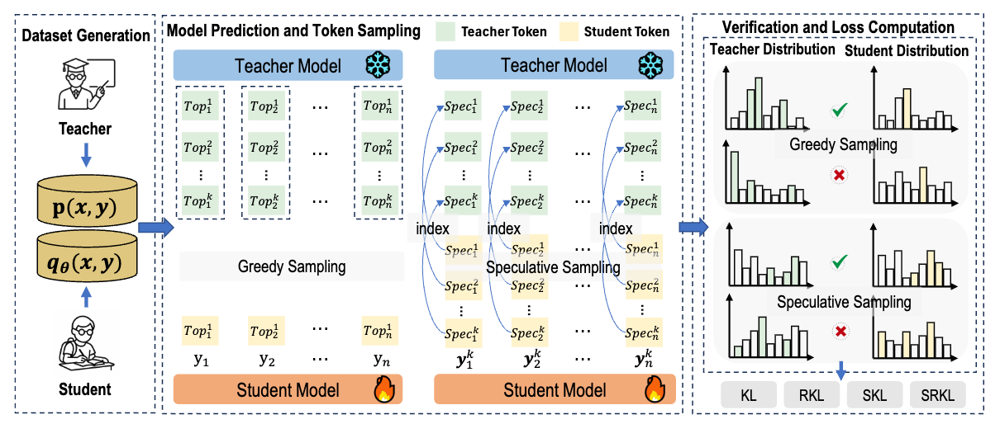
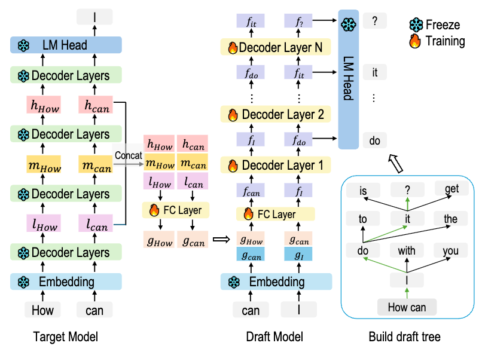
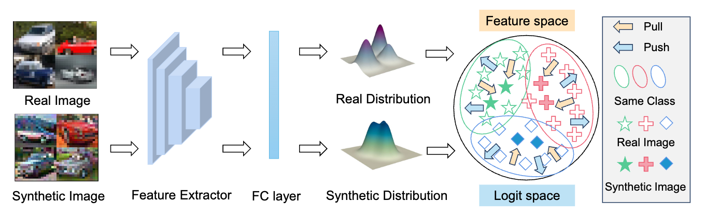
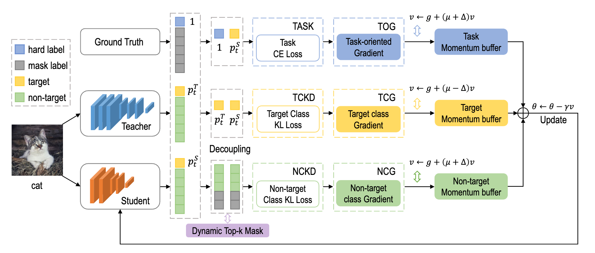
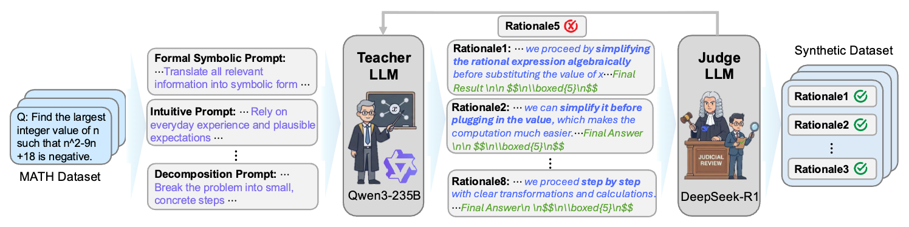

|
Jiangcheng Song (宋蒋成) 我将于2026年秋季进入西安交通大学人工智能学院攻读博士学位，导师为中国工程院院士郑南宁教授。 我的研究兴趣包括：知识蒸馏、大语言模型、高效推理以及数据集压缩。 |

|
发表论文
我致力于高效深度学习、知识蒸馏以及大语言模型优化方面的研究。代表性论文已用高亮标出。
|

|
DR-DPO: Dual-Regularized DPO for Efficient Dataset Condensation
Haiduo Huang*, Jiangcheng Song*, Yadong Zhang*, Guansu Wang, Pengju Ren * 三位作者贡献相同 审稿中 该论文提出了一个双重正则化框架，将数据集压缩重新定义为偏好优化问题。通过类间 DPO 损失最大化类别可分性，同时利用类内 Jensen-Shannon 项保持类内统计特性。 |
|

|
SelecTKD: Selective Token-Weighted Knowledge Distillation for LLMs
Haiduo Huang*, Jiangcheng Song*, Yadong Zhang*, Pengju Ren * 三位作者贡献相同 审稿中 arXiv 针对大语言模型提出的一种选择性 Token 加权知识蒸馏方法，在蒸馏过程中自适应地调整 Token 权重，以提高蒸馏效率和模型性能。 |
|

|
FastEagle: Cascaded Drafting for Accelerating Speculative Decoding
Haiduo Huang*, Jiangcheng Song*, Wenzhe Zhao, Pengju Ren * 两位作者贡献相同 ICASSP 2026 arXiv 提出了一种级联草稿生成方法，用于加速大语言模型的投机解码，在不牺牲生成质量的前提下实现了更快的推理速度。 |
|

|
PPDD: A Unified Push-Pull Adversarial Objective in Feature and Logit Spaces
for Dataset Distillation
Haiduo Huang*, Yadong Zhang*, Jiangcheng Song*, Wenzhe Zhao, Pengju Ren * 三位作者贡献相同 ICASSP 2026 提出了一种统一的“推-拉”对抗性目标函数，同时在特征空间和 Logit 空间起作用，以实现高效的数据集蒸馏。 |
|

|
DeepKD: A Deeply Decoupled and Denoised Knowledge Distillation
Trainer
Haiduo Huang*, Jiangcheng Song*, Yadong Zhang*, Pengju Ren * 三位作者贡献相同 NeurIPS 2025 arXiv / code 该知识蒸馏框架通过对蒸馏过程进行深度解耦和去噪处理，显著提升了模型训练的稳定性和最终性能。 |
合作论文 |

|
"The Whole Is Greater Than the Sum of Its Parts": A Compatibility-Aware
Multi-Teacher CoT Distillation Framework
Jiazhen Cui, Jiahao Guo, Jie Zhou, Rui Yang, Jian Lu, Jun Xu, Jiangcheng Song, Bing Zhao, Pengju Ren 审稿中 arXiv 提出了一种兼容性感知的多导师思维链 (CoT) 蒸馏框架，能够有效利用多个导师模型的互补优势。 |
|

|
MIND: From Passive Mimicry to Active Reasoning through Capability-Aware
Multi-Perspective CoT Distillation
Jiazhen Cui, Jiahao Guo, Jie Zhou, Rui Yang, Jian Lu, Jun Xu, Jiangcheng Song, Bing Zhao, Pengju Ren 审稿中 arXiv 提出了一种能力感知的多视角思维链 (CoT) 蒸馏方法，将模型的学习过程从简单的被动模仿转变为主动推理。 |
教育背景 |
|
|
西安交通大学
人机混合增强智能全国重点实验室 人工智能与机器人研究所 (IAIR) 研究实习生 指导教师: 任鹏举教授 2024年9月 - 2026年2月 |

|
西安交通大学
人工智能学院 人机混合增强智能全国重点实验室 人工智能与机器人研究所 (IAIR) 博士研究生 指导教师: 郑南宁教授 2026年9月 - |